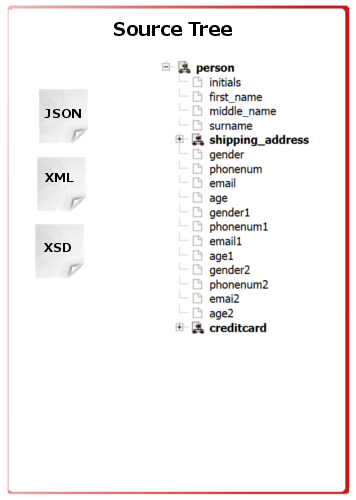
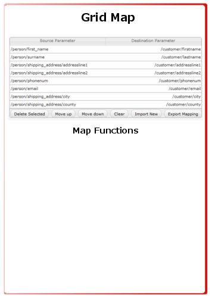
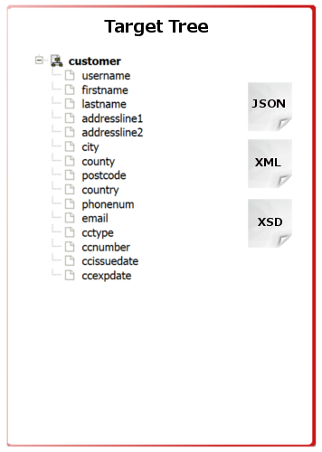

The jQuery Direct Map project is a sub project of SmooKs Direct Mapping project. The goal of this project is to enable create relationship between two structural different data sets visualized as tree.
  The jQuery Direct Map Project
Project Content
1 Description
2 Visual Design
3 Functional Specifications/Requirements
4 Markup & Style
5 Latest version of plug-in
6 Open issues being discussed
type: widget
release: 0.9
status: in progress
documentation: http://directmapping.appspot.com/jdirectmap/jdm_resources.html
demo: http://directmapping.appspot.com/jdirectmap/jdm_demo.html
1 - Description:
The jQuery Direct Map or jDirectMap is a project to enable users to relate two different structural data sets. To support clear design and optimize performance for hierarchical structure, combination of spindown with tree control is used to selectively hide and show information or nodes. The simplest form is a spindown or disclosure triangle which is used to hide or show a single block of information. A set of these stacked together is referred to as a tree control. More information on UI guidelines:
Currently the jQuery UI Tree plugin is in development, but not yet documented (as it's not part of a jQuery UI release). is a tree page on the UI documentation wiki page with more details about the project:
As part of this project a wide research on currently available jQuery tree plug-ins was conducted. Results (full report to be published shortly) shown that there are fairly robust plugins with lots of features to consider:
As part of the project all of these major plugins will be considered and implemented in demo. The plan is to implement basic versions extending each of these tree plugins and leave the selection process to the user. Certain minimal requirements and functional specification with precondition need to be defined and followed in each version.
Source
The input element to define the data structure and visualize content of the source object.
Tree structure is currently most common way how to show large content and enable to selection and extended inspection of the data. Collapsing or extending tree is enables user to easy navigate through the structure.
As the project is aim to be cloud ready a web based technologies are used for the user interface. In the first demo jQuery as the leading java script library is researched.
Following tree plugins passed the selection process and are used for the initial phase demo
As input following format are planned to be accepted :
- XML
- JSON
Please see the demo page for current implementations.
Map
The element to enable create and persist relation between source and destination. Various objects with different object structure have common information. In order to enable to link those an mapping object is designed to enable user easy and quickly understand the common parts. There are two main components of this element.
Map showing from to relation
Function map enabling do define specific transformation
Map requires basic CRUD (create-read-update-delete) functionality.
Please see the demo page for current implementations.
Target
The input element to define the data structure and visualise content of the destination object.
Tree structure is currently most common way how to show large content and enable to selection and extended inspection of the data. Collapsing or extending tree is enables user to easy navigate trhough the structure.
As the project is aim to be cloud ready a web based technologies are used for the user interface. In the first demo jQuery as the leading java script library is researched.
Following tree plugins passed the selection process and are used for the intial phase demo
As input following format are planned to be accepted :
- XML
- JSON
Please see the demo page for current implementations.
2 - Visual Design:
Comprehesive comparasion of currently avaiable tools on the market with the technical limitations considered in visual design prototypes.
3 - Functional Specifications/Requirements:
(Detailed description of how the script will be structured: defaults, options, architecture, extensibility, etc.)
4 - Markup & Style:
4.1 Initial markup examples
(Pre-enhanced HTML markup structure that will be transformed into the final widget.)
4.2 Recommended transformed HTML markup
(The HTML markup structure and classes that will be used by the scripts in the enhanced version)
4.3 Accessibility recommendation
(Detailed recommendations for ARIA, HTML markup, CSS and javascript that will contribute to universal access and full section 508 accessibility for screen readers, mobile devices and any other devices)
4.4 CSS & Theme
(Description of the CSS classes to be used for all states, how custom theming and Themeroller support will work.)
5 - Latest version of plugin:
Project is hosted under GitHub.
6 - Open issues being discussed:
(Use this area to place things that we're hashing out like features and options we're not sure we should include, questions about how this fits into UI and relates to other widgets and utilities, known problems, whether features should be broken across multiple releases, etc.)
- Design features as highlight of active elements, highlight the source and destination based on the row.
- Autoscroll options. what happens if the tree is too long (wide, tall)
- Enable to customize icons and styles / theme of the grid and trees
- How To design and integrate functions.
- JSON source and destination
- Which features should be built-in and which should be handled manually or via extensions
- What should the API be
- For the features we decide not to build-in, what extension points and hooks do we provide in the DOM and in the API to ensure those features can reasonably be built on top